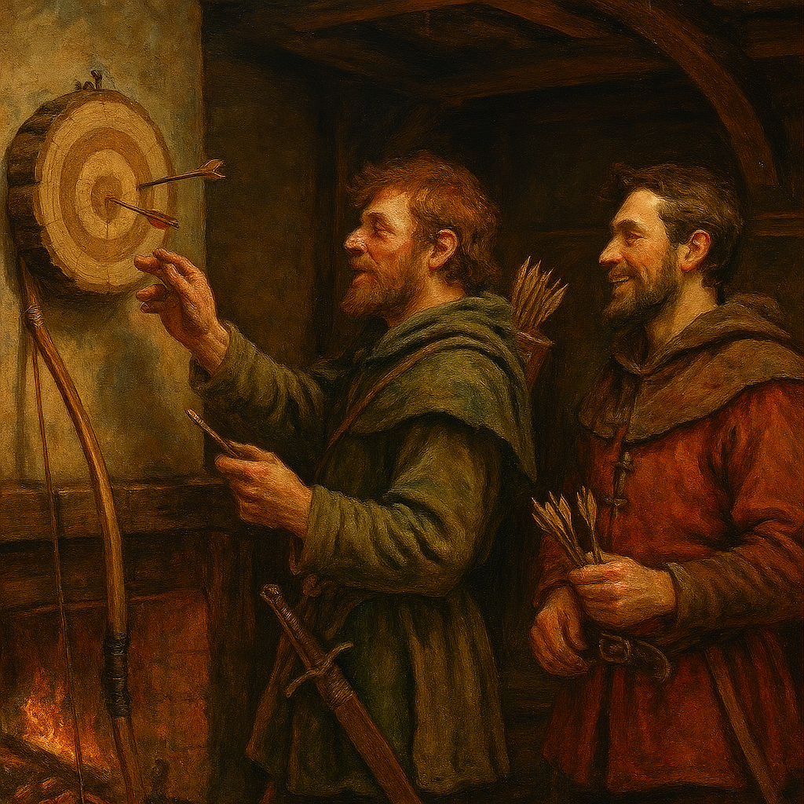
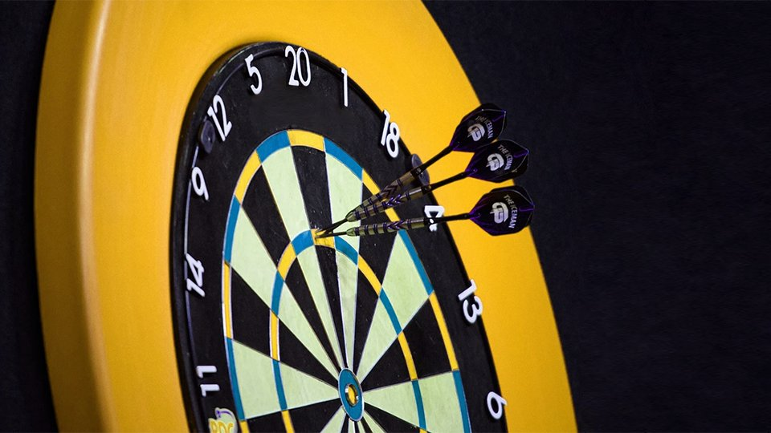

A Darts legendája

Létezik egy legenda, ami pár száz évvel ezelőtt szól. A történet szerint egy angol íjász megunta a
hidegben való gyakorlást, mivel átfázott. Úgy döntött, hogy kitalál erre valamit, mert nem akarta a
hideg időkre való tekintettel befejezni az íjászat gyakorlását. Egy kellemes hőmérsékletű pubba tért
be, ahol a levágott, rövidebb nyílvesszőit egy falra akasztott rönkbe kezdte el dobálni. Egy másik
íjász szintén megpróbált ezt, jobb eredményt elérni. Így született meg a darts.
Hogy ez a legenda igaz-e vagy se, azt sose tudjuk meg valószínűleg. Azt viszont igen, hogy a darts
mai formája 1896-ban lett lefektetve és a ma ismert tábla is ekkor nyerte el végleges formáját.
Történet
1924-ig kellett várni, hogy a darts elérjen egy olyan szintre, ahol már komolyan lehet venni. Előtte
nagyon sokáig szerencsejátéknak tartották ezt a sportágat. Ez az időpont egybe esik az első brit
nemzeti szövetséggel, ami nagyban segített ahhoz, hogy ez a kiváló játék pozitív megítélésben
részesüljön.
A darts története itt nem állt meg. A 60-70-es években nagy fellendülés vette kezdetét a sportban.
Egyrészt azért, mert a különböző gyártási folyamatok és anyagok sokkal jobb és látványosabb
javuláshoz juttatták hozzá a sportot. Másrészt, és ez fontosabb, 1973-ban a TV vetítette a dartsot.
1976-tól létrejött a World Darts Federation, ami egyre több, más országbeli szövetséget emelt a
tagjai közé. Magyarország 1992. december 14-én csatlakozott a szervezethez, amely a 48. tagként
tartja nyilván a Magyar Darts Szövetséget.

Változatai
Az első, és a mai napig a versenyeken használt változata ennek a sportnak a steel darts. Ahogy a neve
is mutatja, a nyílhegy acélból van és ezeket dobják a táblára.
A másik fajtája, ami egyre nagyobb népszerűségnek örvend (és többek között ez is hozzásegítette a
dartsot, hogy drasztikusan növekedjen a népszerűsége), az a soft darts. A nyilak hegyei puhák
lettek, de nem csak ebben különbözik a steel-től. A másik nagy, fontos változás az, hogy a játékot a
gép vezeti le, ami nem csak egyszerűsíti a játékot, de látványosabbá és szórakoztatóbbá is tette.
Szabályok
A dartsnak egységes szabályai vannak, bár előfordulhat, hogy néhány versenyen ezek a dolgok kicsit
változnak, vagy plusz kiegészítések kerülnek bele.
- A dobónak 237 cm-re kell állnia a táblától, aminek a középpontja a talajtól mérve 173 cm magasan
kell, hogy legyen.
- Amikor az ember dob, akkor a dobóvonal mögött kell lennie mindkét lábnak.
- Nem lehet újra dobni a nyilat, még ha az nem is érte el a táblát.
- Az elejtett nyílért be lehet lépni a dobóvonalon belülre is.
- Steel játék esetén: csak azok a nyilak érnek pontot, amit a táblából vettek ki a játékosok
- Soft játék esetén: amit a gép megad, az érvényes.